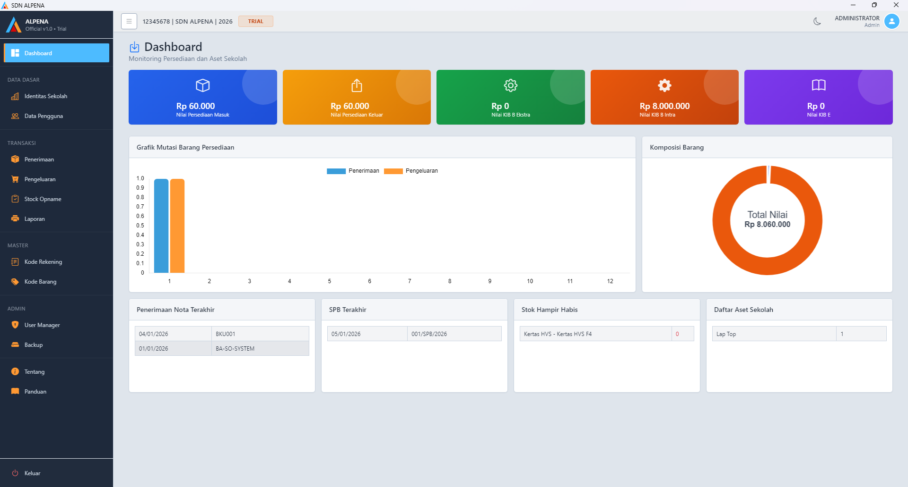
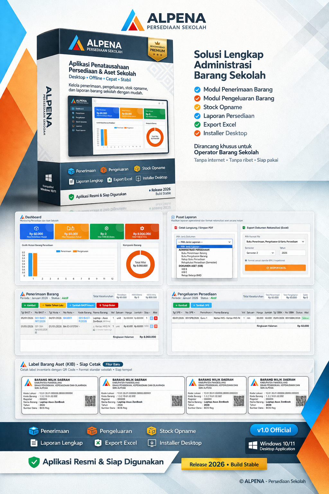
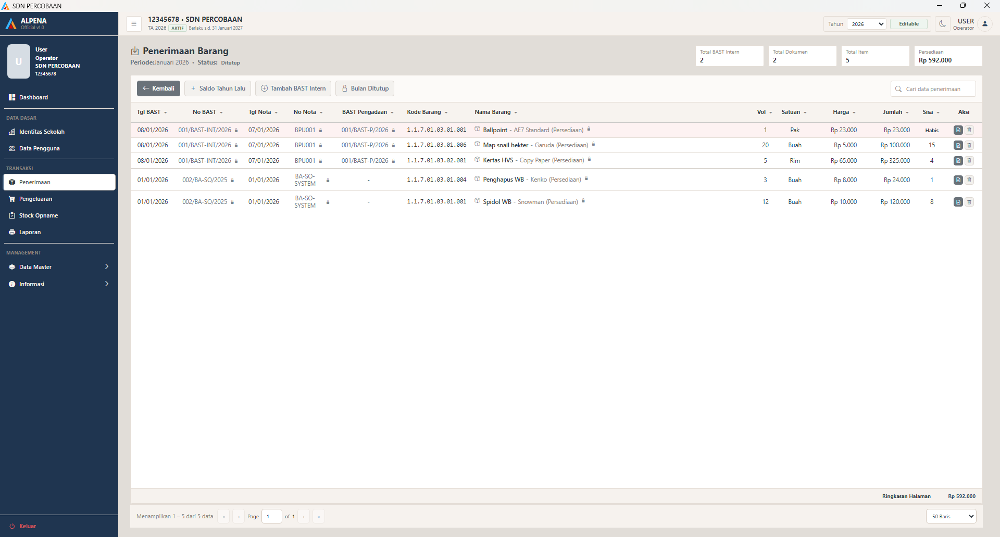
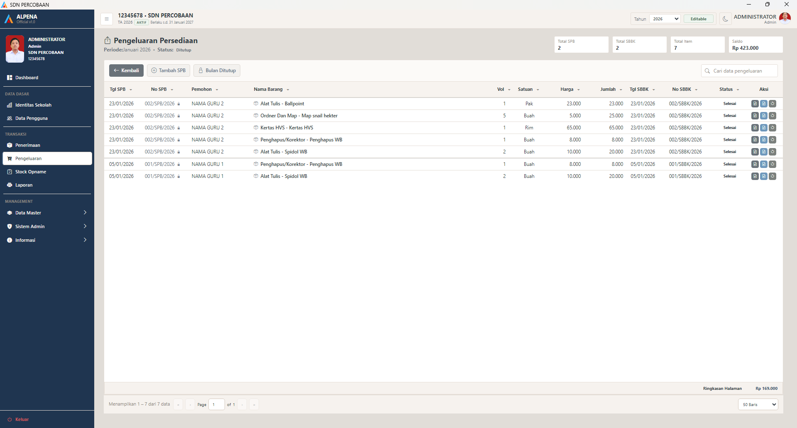
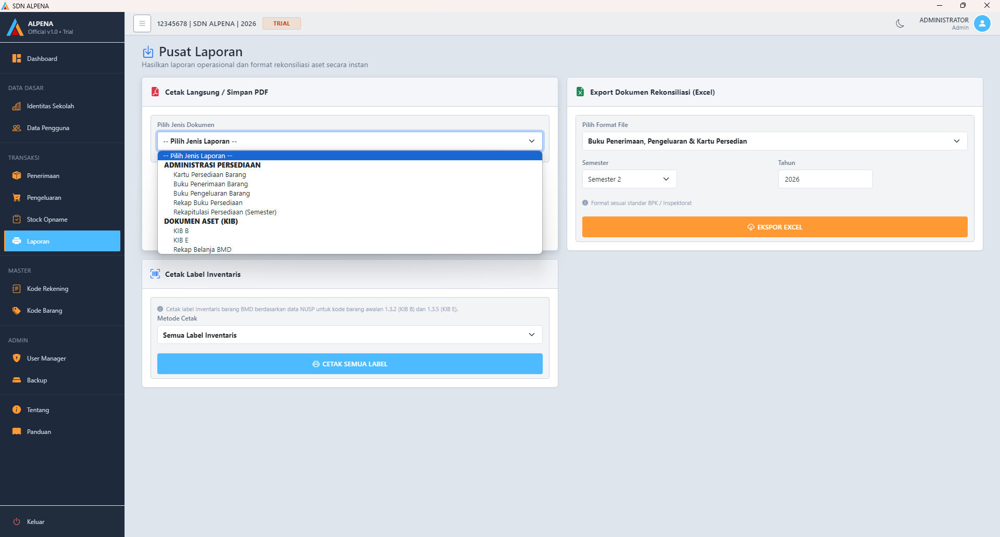

Kelola persediaan dan aset sekolah dengan lebih rapi, lebih cepat, dan lebih siap saat laporan maupun pemeriksaan.
ALPENA membantu operator sekolah mencatat penerimaan, pengeluaran, stock opname, kartu persediaan, hingga laporan administrasi dalam satu aplikasi desktop offline. Cocok untuk sekolah yang ingin mengurangi file tercecer, pencatatan berulang, dan pekerjaan laporan manual yang menyita waktu.
Format administrasi dirancang mengacu pada Permendagri No. 108 Tahun 2016 dan No. 47 Tahun 2021.

Bukan sekadar aplikasi pencatatan, tetapi alat kerja untuk membantu sekolah menata administrasi barang dari awal sampai output laporan
ALPENA dirancang untuk membantu sekolah mengurangi pekerjaan berulang, memperjelas alur pencatatan, menata data barang dengan lebih tertib, dan menyiapkan dokumen administrasi yang lebih siap digunakan untuk kebutuhan operasional sehari-hari.

Format administrasi ALPENA disusun dengan mengacu pada Permendagri No. 108 Tahun 2016 dan No. 47 Tahun 2021.
Dirancang untuk pekerjaan administrasi yang sering lambat, tercecer, dan berulang
Banyak sekolah masih mengerjakan pencatatan barang, rekap, dan laporan melalui file terpisah yang sulit ditelusuri kembali. ALPENA lahir untuk merapikan alur itu menjadi lebih runtut, lebih mudah dipahami, dan lebih ringan dijalankan dalam pekerjaan harian.
Alur Kerja Lebih Jelas
Penerimaan, pengeluaran, stock opname, kartu persediaan, dan laporan tersusun lebih runtut agar operator tidak perlu sering berpindah file atau mengulang pencatatan.
Administrasi Lebih Rapi
Data barang, dokumen, dan output administrasi tersimpan lebih tertib agar pencarian data, pengecekan mutasi, dan persiapan pemeriksaan terasa lebih ringan.
Siap Dipakai Operasional
ALPENA dirancang untuk kebutuhan riil sekolah, membantu pekerjaan harian sekaligus menyiapkan output administrasi yang memang dibutuhkan.
ALPENA cocok untuk pihak sekolah yang mengelola barang dan dokumen administrasi
Jika pekerjaan Anda berkaitan dengan pencatatan barang sekolah, penyiapan rekap, atau pengecekan dokumen administrasi, ALPENA dirancang untuk membantu pekerjaan tersebut menjadi lebih runtut dan lebih mudah dilanjutkan.
Operator Sekolah
Membantu mencatat transaksi barang, menata data, dan menyiapkan administrasi harian dengan alur yang lebih konsisten.
Pengurus Barang & Sarpras
Memudahkan pelacakan stok, mutasi, label inventaris, dan rekap aset agar data lebih mudah ditinjau saat dibutuhkan.
Pimpinan Sekolah
Membantu memastikan data dan dokumen administrasi lebih siap, tertib, dan tidak terlalu bergantung pada pencarian file manual.
Fitur inti untuk pekerjaan barang sekolah dari pencatatan sampai dokumen hasil
Setiap fitur di ALPENA dirancang untuk mengurangi pekerjaan manual, memperjelas alur kerja, dan membantu pengguna menghasilkan dokumen administrasi dengan lebih cepat dan lebih tertib.
Penerimaan Barang
Catat dokumen penerimaan, rincian barang, dan stok masuk dengan alur yang lebih terstruktur agar data awal lebih rapi sejak proses input.
Pengeluaran Barang
Kelola distribusi dan penggunaan barang dengan kontrol periode yang jelas agar mutasi barang mudah ditelusuri dan stok tetap terpantau.
Laporan Otomatis
Susun laporan operasional dan dokumen pendukung dengan format yang lebih rapi agar penyusunan laporan jauh lebih ringan dibanding membuat ulang secara manual.
Label Inventaris
Cetak label barang inventaris secara lebih rapi dan konsisten untuk membantu identifikasi aset di lapangan.
Kartu & Rekap
Mendukung kartu persediaan, rekap administrasi, dan pelacakan mutasi barang agar pemeriksaan data tidak bergantung pada file yang tersebar.
Sesuai Permendagri
Format administrasi dirancang mengacu pada Permendagri No. 108 Tahun 2016 dan No. 47 Tahun 2021 agar lebih relevan dengan kebutuhan dokumen sekolah.
Sampul Laporan Otomatis
Membantu menyiapkan sampul berbagai jenis laporan agar dokumen lebih rapi, formal, dan tidak perlu sering dibuat ulang di luar aplikasi.
Rekap KIB & BMD
Mendukung kebutuhan rekap KIB B Intrakomptable, KIB B Ekstrakomptable, KIB E, serta rekap BMD untuk administrasi aset sekolah yang lebih tertib dan lebih mudah ditinjau ulang.
Dokumen Excel Rekonsiliasi
Membantu menyiapkan dokumen Excel untuk kebutuhan rekonsiliasi secara lebih rapi dan praktis tanpa banyak menyusun ulang dokumen pendukung dari awal.
Lihat tampilan aplikasi sebelum mencoba versi demo
Screenshot berikut diambil langsung dari aplikasi ALPENA agar calon pengguna bisa menilai tampilan, struktur menu, dan alur kerjanya sejak awal.
Dashboard ringkas untuk melihat data dan aktivitas utama

Halaman penerimaan dengan alur input yang jelas

Halaman pengeluaran yang konsisten dan efisien digunakan

Output laporan yang siap dipakai untuk administrasi sekolah
Bukan hanya fitur, tetapi hasil administrasi yang lebih siap dipakai
ALPENA membantu sekolah menghasilkan dokumen dan keluaran administrasi yang lebih siap dipakai, bukan hanya menyimpan data transaksi.
Buku Penerimaan & Pengeluaran
Menyiapkan buku penerimaan barang pakai habis dan buku pengeluaran barang pakai habis untuk kebutuhan administrasi operasional sekolah.
Buku Persediaan & Kartu Persediaan
Menyediakan buku persediaan dan kartu persediaan barang agar pengecekan sisa barang, mutasi, dan riwayat data lebih mudah.
Label Inventaris
Cetak label terpilih maupun semua label inventaris agar aset sekolah lebih mudah diidentifikasi di lapangan.
Rekapitulasi Persediaan, KIB, & BMD
Mendukung rekapitulasi persediaan SKPD, KIB B Intrakomptable, KIB B Ekstrakomptable, KIB E, serta rekap barang inventaris BMD.
Sampul & Dokumen Pendukung
Menyiapkan sampul laporan dan dokumen pendukung agar hasil administrasi terlihat lebih formal, rapi, dan siap digunakan.
Export PDF & Excel
Hasil administrasi dapat dicetak dalam PDF maupun diekspor ke Excel untuk kebutuhan rekap, arsip, atau dokumen pendukung lanjutan.
Mulai bekerja tanpa setup teknis yang rumit
Proses awalnya disederhanakan agar sekolah bisa lebih cepat fokus ke pekerjaan administrasi, bukan ke konfigurasi sistem.
Installer Sudah Siap Pakai
ALPENA disediakan dalam paket installer sehingga pengguna tidak perlu menyiapkan database manual sebelum mulai menggunakan aplikasi.
Tanpa XAMPP atau Setup Tambahan
Pengguna tidak perlu menginstal XAMPP, Apache, PHP, atau MySQL secara terpisah. Kebutuhan dasar sistem sudah disiapkan secara internal.
Panduan Operasional Sudah Tersedia
Ada panduan penggunaan yang membantu admin dan operator memahami instalasi, login, data dasar, transaksi, laporan, dan pemeliharaan sistem.
Calon pengguna bisa menilai sendiri sebelum membeli
Calon pengguna bisa mencoba demo, membuka panduan, dan menghubungi pengembang langsung sebelum memutuskan aktivasi.
Demo Bisa Dicoba Langsung
Sekolah dapat melihat alur kerja, menu, dan tampilan aplikasi lebih dulu sebelum mengambil keputusan aktivasi.
Panduan Mudah Diakses
File panduan PDF dan tutorial tambahan membantu calon pengguna memahami instalasi maupun alur penggunaan dengan lebih terarah.
Kontak Resmi Tersedia
Jika ada pertanyaan sebelum mencoba atau saat aktivasi, sekolah dapat langsung menghubungi pengembang melalui WhatsApp atau email resmi.
Bukan hanya input dan laporan, tetapi juga kontrol kerja yang lebih matang
Ada fitur administratif dan pengendalian sistem yang membuat ALPENA lebih siap untuk penggunaan riil di sekolah.
Hak Akses Admin & Operator
Pembagian peran pengguna membantu sekolah membedakan fungsi operasional harian dan fungsi pengendalian sistem.
Tutup Bulan
Membantu menjaga ketertiban periode kerja agar data transaksi lebih terkontrol sesuai alur administrasi yang berjalan.
Backup & Restore Data
Sekolah memiliki jalur pengamanan data yang lebih baik melalui backup database dan proses pemulihan saat diperlukan.
Recovery Admin
Tersedia mekanisme recovery key admin dan bantuan pengembang untuk pemulihan akses apabila terjadi kendala pada akun admin.
Lisensi Tahun Anggaran
Pengelolaan lisensi mengikuti kebutuhan sekolah, perangkat, dan tahun anggaran yang dipakai dalam operasional aplikasi.
Histori Multi Tahun
Data tahun berjalan dan tahun arsip lebih mudah ditinjau untuk menjaga kesinambungan administrasi antar tahun anggaran.
Transparan, sederhana, dan mudah dipahami
ALPENA tersedia dalam versi demo gratis untuk uji coba, serta versi Pro untuk penggunaan operasional penuh di sekolah. Versi demo membantu sekolah menilai kecocokan alur kerjanya, sedangkan versi Pro disiapkan untuk penggunaan harian dengan keluaran administrasi yang lebih lengkap dan kontrol operasional yang lebih matang.
Versi Demo
Cocok untuk melihat tampilan, mengenal alur kerja, dan menilai kecocokannya dengan kebutuhan sekolah sebelum aktivasi versi penuh.
- ✓ Bisa dicoba sebelum membeli
- ✓ Tampilan dan alur kerja asli aplikasi
- ✓ Fitur dibatasi untuk keperluan demonstrasi
- ✓ Cocok untuk pengenalan awal
ALPENA Pro
Untuk sekolah yang ingin menggunakan ALPENA secara penuh dalam administrasi persediaan dan aset. Cocok untuk operasional harian yang lebih rapi, tertib, dan lebih siap untuk kebutuhan laporan serta dokumen pendukung.
- ✓ Lisensi resmi untuk 1 sekolah pada 1 komputer
- ✓ Aktivasi awal untuk 1 tahun anggaran
- ✓ Fitur Pro untuk penggunaan operasional penuh
- ✓ Format administrasi mengacu pada Permendagri
- ✓ Dukungan laporan, sampul, dan output administrasi
- ✓ Dukungan label inventaris dan aset
- ✓ Dukungan backup data dan histori multi tahun
- ✓ Aplikasi desktop offline
- ✓ Tanpa biaya bulanan
- ✓ Dukungan & update selama masa aktivasi
Mulai gunakan ALPENA dalam beberapa langkah
Sekolah bisa mencoba lebih dulu, lalu melanjutkan ke aktivasi saat merasa alur kerjanya memang membantu pekerjaan administrasi.
Download Installer
Unduh versi demo ALPENA dari halaman resmi ini, lalu buka panduan PDF jika ingin mengikuti langkah penggunaan dengan lebih terarah.
Install di Perangkat
Pasang ALPENA di komputer atau laptop sekolah melalui installer yang sudah disiapkan tanpa perlu setup database manual atau instal komponen server tambahan.
Coba & Kenali Fitur
Gunakan versi demo untuk melihat apakah pencatatan, menu, dan hasil administrasinya cocok dengan kebutuhan sekolah.
Aktivasi Versi Pro
Jika sesuai kebutuhan, lanjutkan ke aktivasi ALPENA Pro untuk menggunakan fitur penuh, kontrol operasional, dan keluaran administrasi yang lebih lengkap.
Perangkat yang bisa digunakan untuk memasang ALPENA
ALPENA dirancang sebagai aplikasi desktop Windows yang dapat digunakan di laptop atau komputer sekolah dengan kebutuhan perangkat yang ringan dan umum dijumpai, dengan instalasi yang praktis tanpa setup teknis tambahan.
Spesifikasi Minimal
- Sistem Operasi: Windows 10 atau Windows 11
- Prosesor: Dual-core 64-bit
- RAM: Minimal 4 GB
- Ruang Penyimpanan: Minimal 10 GB kosong untuk instalasi dan data awal
- Layar: Resolusi minimal 1366 x 768
Disarankan Agar Lebih Nyaman
- RAM: 8 GB atau lebih
- Penyimpanan: SSD
- Ruang Kosong: 5 GB atau lebih
- Layar: Full HD 1920 x 1080
- Penggunaan: Cocok untuk operasional harian dengan data yang terus bertambah
Kebutuhan Tambahan
- Hak Akses Instalasi: Diperlukan agar aplikasi dapat dipasang di Windows
- Setup Teknis Tambahan: Tidak perlu XAMPP, Apache, PHP, atau MySQL terpisah
- Printer: Jika ingin mencetak laporan, label, atau dokumen administrasi
- Microsoft Excel: Jika diperlukan untuk dokumen pendukung atau hasil ekspor
- PDF Reader: Untuk membuka laporan dalam format PDF
- Internet: Tidak wajib untuk operasional harian, tetapi disarankan saat download, aktivasi, atau bantuan penggunaan
Coba versi demo ALPENA dan nilai kecocokannya untuk sekolah
Unduh demo resmi, buka panduan PDF, lalu lanjutkan konsultasi jika ingin memastikan instalasi atau menilai alur kerja sebelum aktivasi versi Pro.
Mulai dari Demo Resmi ALPENA
Gunakan tombol utama untuk mengunduh demo. Jika ingin melihat detail file terlebih dahulu atau membutuhkan bantuan saat instalasi, gunakan tautan pendukung dan kontak resmi yang tersedia di halaman ini.
Lihat Detail FileCocok untuk mengenal tampilan, menu, dan logika kerja ALPENA sebelum sekolah memutuskan aktivasi versi penuh.
Tanya Sebelum DownloadPertanyaan yang sering ditanyakan
Beberapa pertanyaan yang biasanya muncul sebelum sekolah mencoba demo atau melanjutkan aktivasi ALPENA Pro.
Apakah ALPENA harus selalu online?
Tidak. ALPENA dirancang sebagai aplikasi desktop offline dan nyaman digunakan tanpa koneksi internet saat operasional.
Apakah tersedia versi demo?
Ya. Versi demo tersedia agar sekolah dapat mencoba aplikasi terlebih dahulu, menilai alur kerjanya, lalu memutuskan apakah ALPENA sesuai untuk penggunaan operasional.
Bagaimana sistem lisensinya?
Lisensi ALPENA berlaku per sekolah dengan aktivasi awal dan perpanjangan tahunan.
Apakah bisa digunakan lintas jenjang?
Ya. ALPENA dirancang fleksibel untuk kebutuhan sekolah dan madrasah lintas jenjang.
Apa perbedaan Demo dan Pro?
Versi Demo digunakan untuk melihat tampilan dan mengenal alur kerja aplikasi, sedangkan versi Pro ditujukan untuk penggunaan operasional penuh dengan keluaran administrasi yang lebih lengkap sesuai kebutuhan sekolah.
Bagaimana proses aktivasinya?
Setelah sekolah merasa cocok, aktivasi ALPENA Pro dapat dilanjutkan melalui kontak resmi untuk panduan penggunaan dan proses aktivasi.
Apakah ada bantuan instalasi dan penggunaan?
Ya. Dukungan instalasi, konsultasi awal, dan bantuan penggunaan tersedia melalui WhatsApp selama masa aktivasi.
Di perangkat seperti apa ALPENA digunakan?
ALPENA disiapkan sebagai aplikasi desktop Windows untuk digunakan di komputer atau laptop sekolah.
Hubungi Pengembang ALPENA
Untuk konsultasi kebutuhan sekolah, bantuan instalasi, aktivasi, atau pertanyaan penggunaan, silakan hubungi melalui kontak berikut.
Konsultasi cepat, bantuan instalasi, informasi demo, dan aktivasi ALPENA Pro.
Konsultasi via WhatsApp